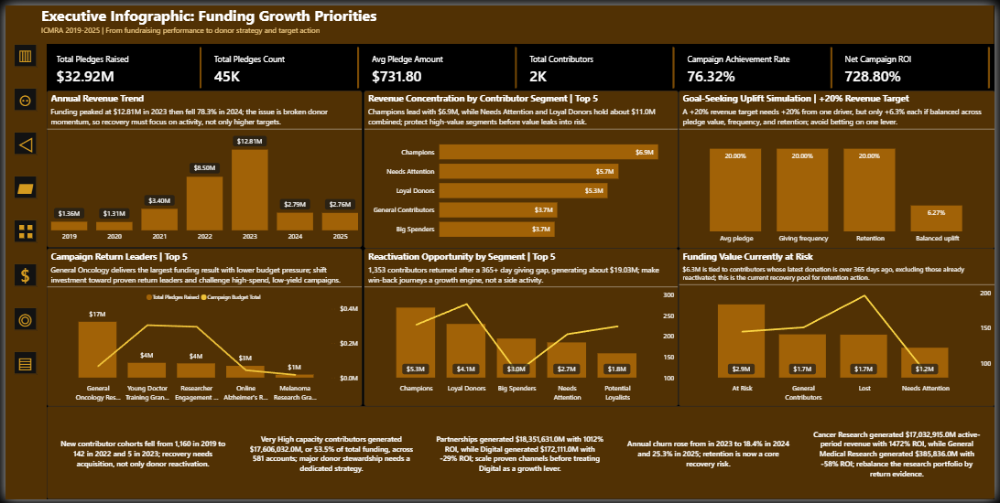

Fundraising Analytics Dashboard
A Power BI decision-support dashboard for fundraising performance, contributor value, and revenue planning.

Project overview
This project presents a strategic Business Intelligence solution for the International Consortium for Medical Research Advancement, a medical research fundraising organisation. The dashboard transforms fundraising activity from 2019 to 2025 into executive-ready insight across revenue performance, contributor behaviour, campaign efficiency, retention risk, and growth planning.
The work was positioned as a decision-support solution rather than a static fundraising report. It connects data preparation, semantic modelling, KPI design, advanced analytics, and stakeholder-ready recommendations into one portfolio case study.
Business problem
ICMRA needed clearer visibility into whether fundraising performance was growing sustainably, which contributor groups created the most value, which campaigns performed efficiently, and where dormant contributor value created future revenue risk.
The business challenge was to move beyond total donation reporting and provide senior management with a structured view of performance, risk, and realistic growth levers.
Analytics contribution
- Assessed data quality and planned Power Query cleaning logic.
- Designed a Power BI semantic model using a star schema and date dimension.
- Defined KPI and metric logic for executive fundraising review.
- Applied RFM segmentation, cohort retention, historical CLV proxy, campaign ROI, and what-if scenario analysis.
- Translated dashboard outputs into business recommendations for campaign optimisation, contributor strategy, and retention planning.
Dashboard structure
- Executive Overview
- Campaign Performance
- Contributor Overview
- RFM Analytics
- Cohort Analytics
- CLV Analysis
- Scenario Analysis
- Executive Infographic
Key insights
- Revenue peaked at $12.81M in 2023 before falling by 78.3% to $2.79M in 2024, showing that peak performance should not be treated as a stable baseline.
- Reactivated contributors generated $19.03M in revenue, reframing dormant contributors as a recoverable value pool.
- Approximately $6.3M in dormant contributor value remained exposed to retention risk.
- A balanced +6.27% uplift across average pledge, giving frequency, and retention drivers could support a +20% revenue target more realistically than relying on one driver alone.
Outcome
The final dashboard gives senior stakeholders a structured way to review fundraising volatility, contributor value, campaign efficiency, retention exposure, and future revenue planning. It demonstrates how business questions can be converted into reliable metrics, analytical views, and practical recommendations.
From a Business Analyst and Data Analyst perspective, the project shows the full path from business problem framing and data preparation through to dashboard design, insight communication, and decision support.